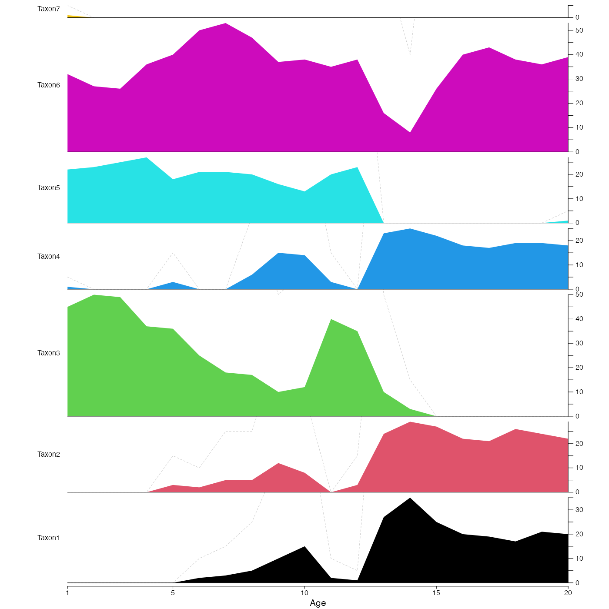

This function plots stratigraphic data either as polygons or bars.
plot_diagram( x, bars = FALSE, col = "black", amplif = 5, save = FALSE, filename = "Diagram.pdf", width = 3.54, height = 9, as.png = FALSE, png.res = 300, yax_incr = 5, bar_width = diff(range(x$inputs$x))/50, xlim = NA, tickAtSample = TRUE, col_pos = "black", col_neg = "grey80", title = NA )
Arguments
| x | A data frame of the data to plot (first column with age or depth)
and the taxa in the following columns. x can also be a
|
|---|---|
| bars | A boolean that indicates if the data should be plotted as polygons
(default: |
| col | Colours to be used for the polygons. If the number of colours does not match the number of taxa, colors will be recycled. |
| amplif | A factor the show exaggeration on the diagram. Only for polygon plot. Default 5. |
| save | A boolean to indicate if the diagram should be saved as a pdf file.
Default is |
| filename | An absolute or relative path that indicates where the diagram
should be saved. Also used to specify the name of the file. Default:
the file is saved in the working directory under the name
|
| width | The width of the output file in inches (default 3.54in ~ 9cm). |
| height | The height of the output file in inches (default 9in ~ 23cm). |
| as.png | A boolean to indicate if the output should be saved as a png.
Default is |
| png.res | The resolution of the png file (default 300 pixels per inch). |
| yax_incr | Graphical parameters describing the increment size on the y-axis (default 5). |
| bar_width | Width of the bars of the barplot (default 1/50th of the x range). |
| xlim | The range covered by the x-axis. Can be adjusted to get round numbers on the x-axis. If smaller than the range covered by the data, the data will be truncated (default: range of the data). |
| tickAtSample | Boolean that indicates whether a tick mark should be added
on the x-axis at the location of each sample (default |
| col_pos | Graphical parameter for the barplot. Colour of all the positive values (default black). |
| col_neg | Graphical parameter for the barplot. Colour of all the negative values (default light grey). |
| title | Name to be added on top of the plot (default |
Value
No return value, this function is used to plot.
Examples
plot_diagram(crest_ex, col=1:7, tickAtSample=FALSE)